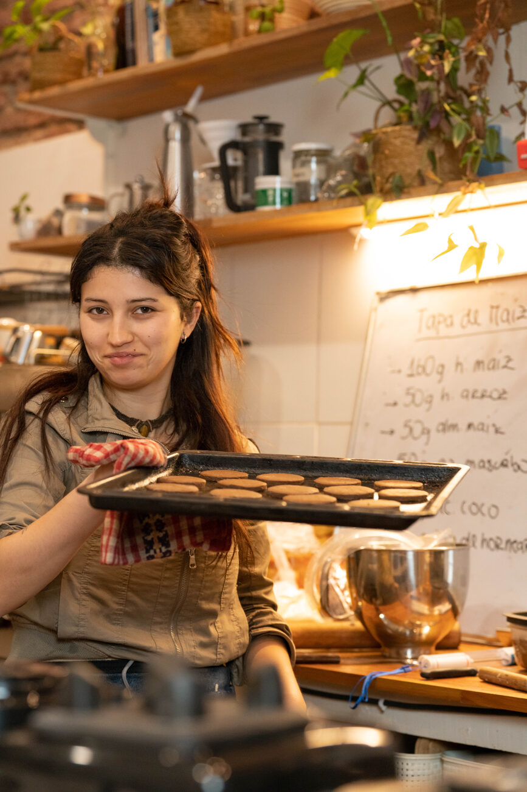
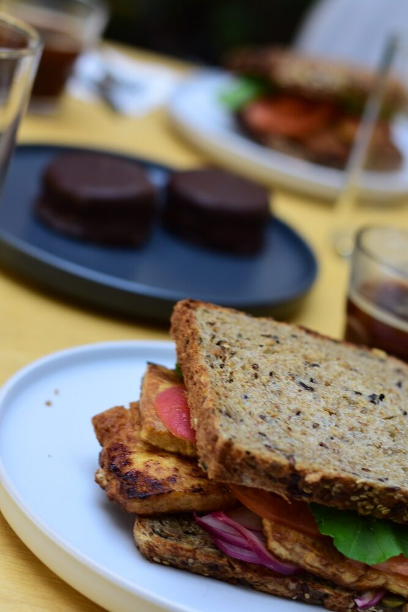
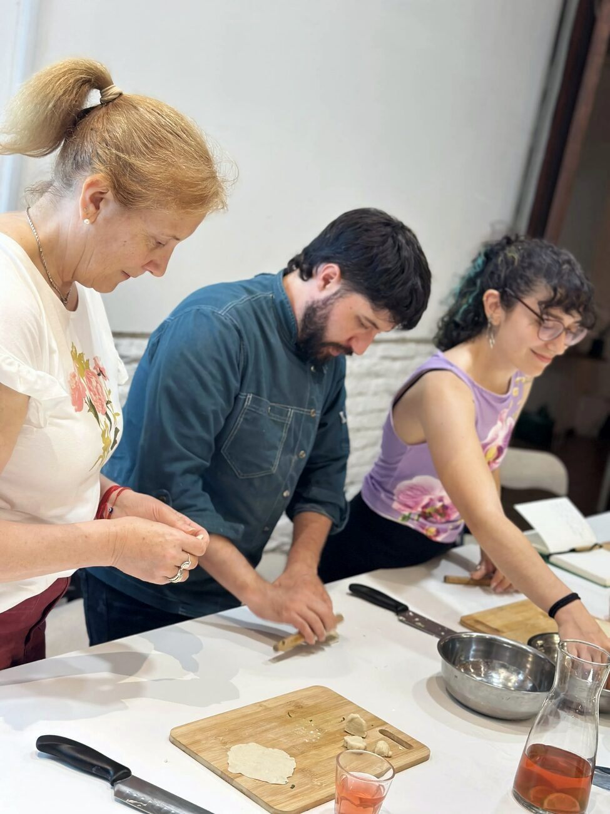
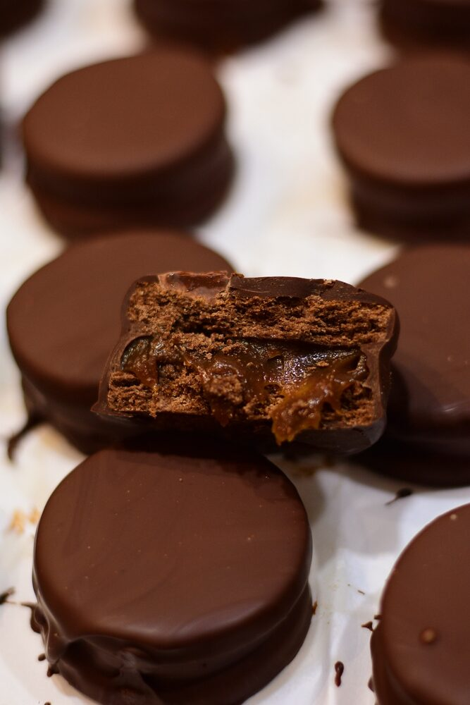
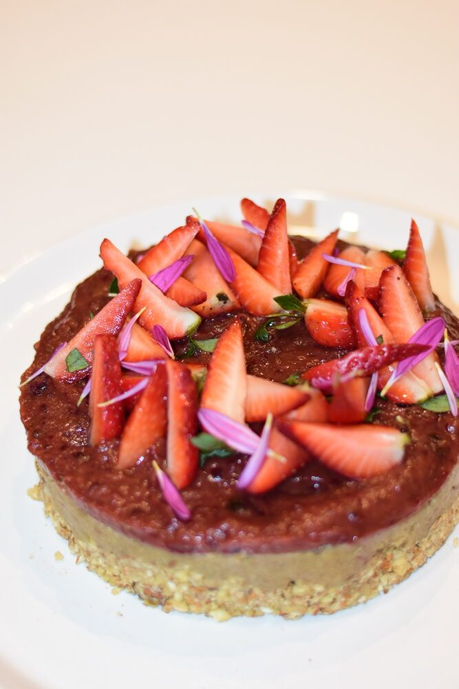
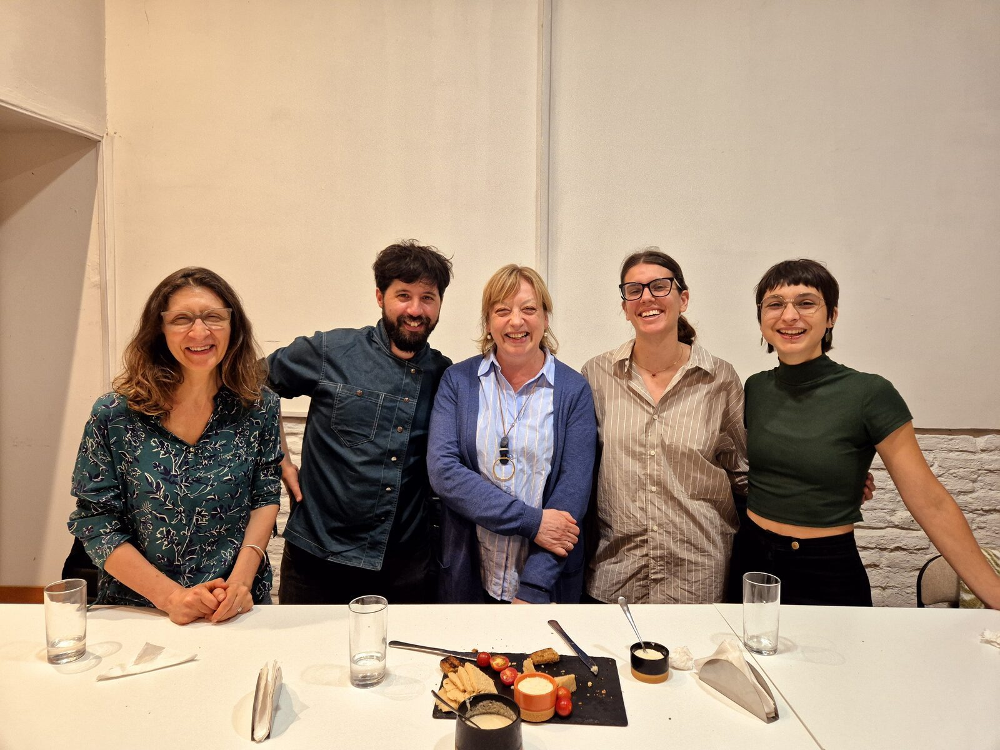

Talleres
Encuentros intensivos de un día. Cada taller tiene una técnica central y un ritmo más relajado que el curso. Dejá tu interés y te avisamos cuando haya fecha.
Sin fecha fija — avisamos a quienes dejaron su interés con anticipación.
Taller 01
Fermentación de vegetales
Fermentación láctica aplicada a la cocina cotidiana. Trabajamos chucrut, kimchi y encurtidos desde el proceso: qué pasa biológicamente, cómo controlarlo, cómo saber si está bien. Sin receta mágica — con comprensión real del mecanismo.
Avisame cuando haya fecha →
Taller 02
Pan sin gluten con masa madre
El problema del pan sin gluten no es la harina — es entender la hidratación, la fermentación y la estructura. Trabajamos esas variables: por qué quedan apelmazados y cómo resolverlo. Con masa madre real, sin aditivos, con comprensión del proceso.
Avisame cuando haya fecha →
Taller 03
Pastas sin gluten
Masa, textura y cocción — no la harina. Trabajamos la hidratación, los almidones alternativos y la técnica de amasado para conseguir pastas sin gluten que realmente funcionan. Sin aditivos, con criterio sobre el proceso.
Avisame cuando haya fecha →
Taller 04
Alfajores plant-based
Elaboraciones dulces sin lácteos ni huevos, con técnica pastelera real. No se trata de sustituir ingredientes uno a uno — se trata de entender qué función cumple cada componente y cómo reemplazarlo con criterio. Alfajores, ganache y rellenos sin compromiso de textura.
Avisame cuando haya fecha →
Taller 05
Quesos vegetales
Fermentación, maduración y textura aplicadas a quesos de cajú y otras bases vegetales. Entendemos qué hace que un queso sea queso — acidez, proteína, grasa, tiempo — y replicamos ese proceso sin ingredientes de origen animal.
Avisame cuando haya fecha →
Taller 06
Tapeo — cocinar y cenar
Una experiencia distinta: cocinamos juntos y después nos sentamos a comer lo que elaboramos. Patés, encurtidos, pan, hummus, pequeños platos. Para quienes disfrutan tanto del proceso como de la mesa. Grupos muy pequeños, sin apuro.
Avisame cuando haya fecha →
El curso de tres meses va más adentro.
Si querés construir criterio culinario real, el camino es el programa completo.
Ver el curso →